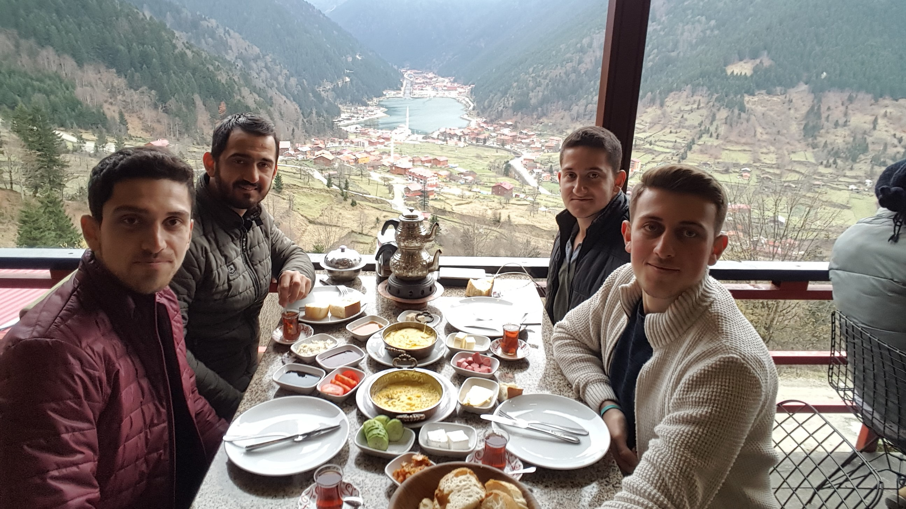
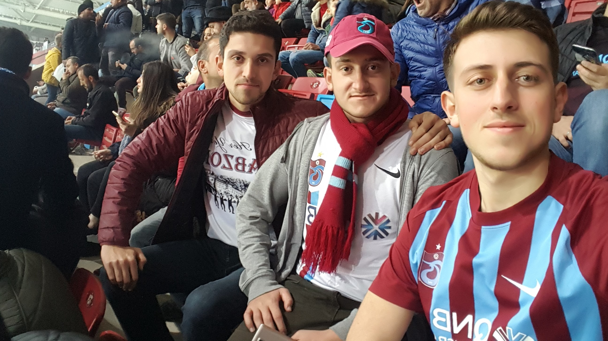

Bu kuzenim burdaki üçlü arasındaki en büyük kuzenim kendisi 26 yaşında olup Makine Mühendisliğinden mezun. Çocukluğumdan beridir her daim yanımda olan eğlenceli vakitler geçirdiğim sevdiğim bir kuzenim.
Bu kuzenim 25 yaşında .Kendisini her daim öven bir kuzenim.:) Birlikte uzun seyahtler yaptığım ve her daim birlikteyken mutlu olduğum güzel vakitler geçirdiğim bir kuzenim.
Bu kuzenim 23 yaşında .Bahsetmiş olduğum Lütfü abimin kardeşi. Kendisinde tatlı bir boşvermişlik havası vardır :). Çocukluğumu onunla geçirdim diyebilirim. Onunla geçen zamanlar eğlenceli ve bir o kadar da güzeldi.